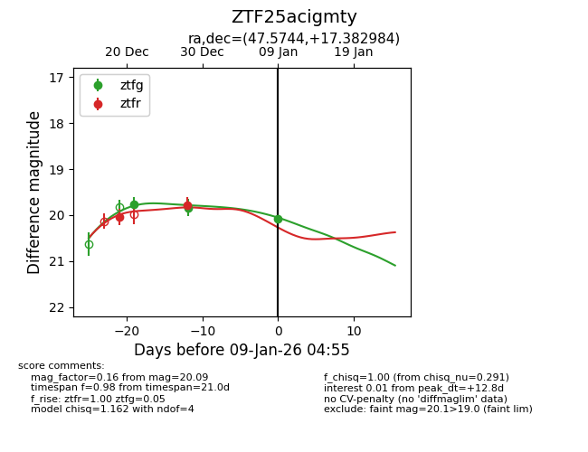
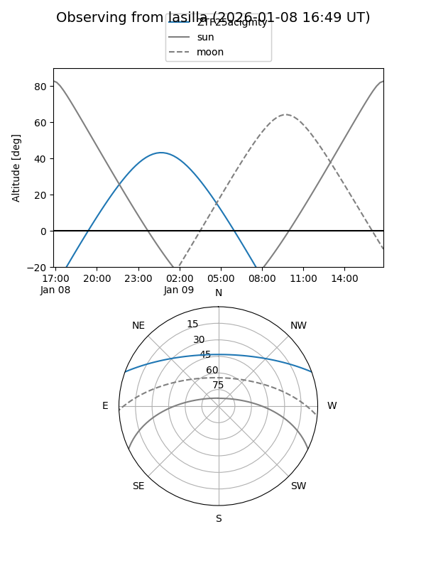
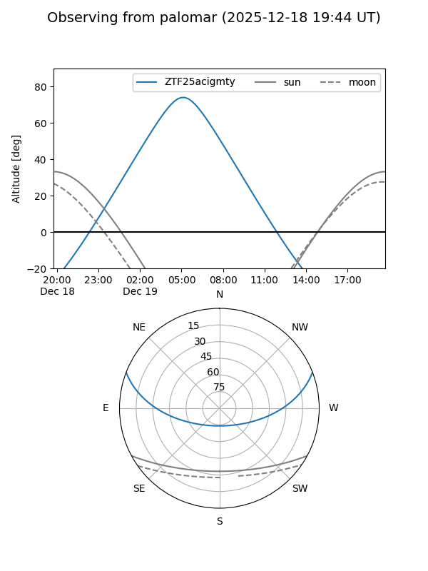

ZTF25acigmty
Target ZTF25acigmty at 2026-01-09 04:56
Aliases and brokers:
FINK:
Lasair:
ALeRCE:
alt names
ZTF25acigmty (ztf,fink_ztf)
Coordinates:
equatorial (ra, dec) = 47.5744,+17.38298
equatorial (HMS+DMS) = 03:10:17.86,+17:22:58.74
galactic (l, b) = (164.0055,-34.18914)
Flags:
Photometry:
last ztfg=20.09, ztfr=19.78
3 ztfg, 2 ztfr detections
Lightcurve

Visibility


Additional plots